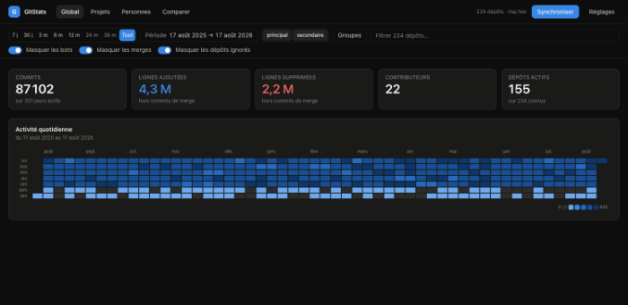
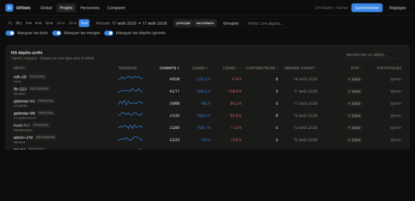
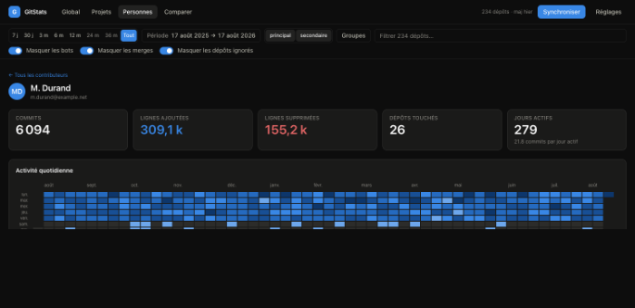
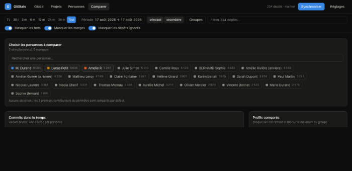

Le tableau de bord d'activité de tout votre parc GitLab. Une page, votre jeton, rien à déployer.
démo sans jeton · MIT
Multi-instances
Même personne sur deux serveurs : une seule ligne dans le classement.
Sans serveur
Votre jeton reste dans l'onglet. Aucune donnée ne part ailleurs.
Chiffres justes
Même SHA, même code : le doublon est écarté avant de gonfler vos totaux.




Une URL, un jeton en lecture seule. Ou regardez la démo, sans rien donner.